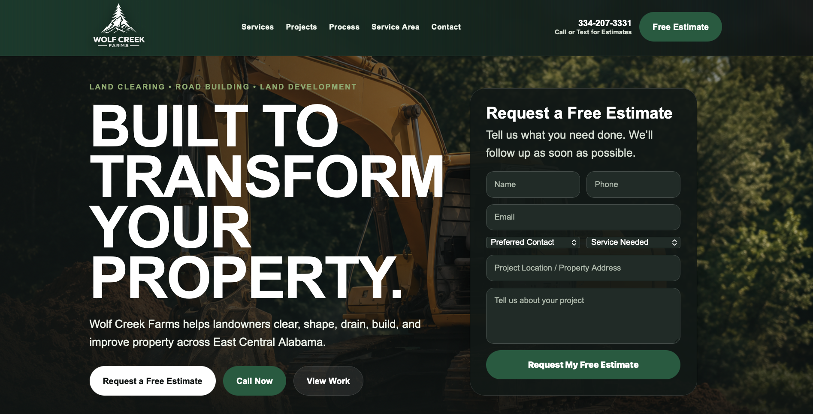
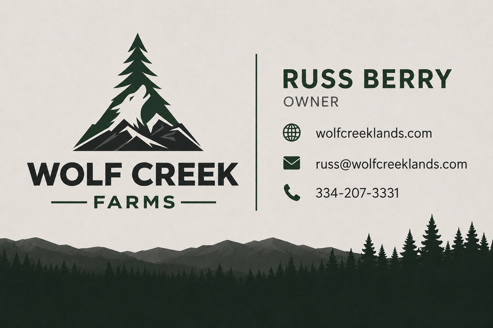
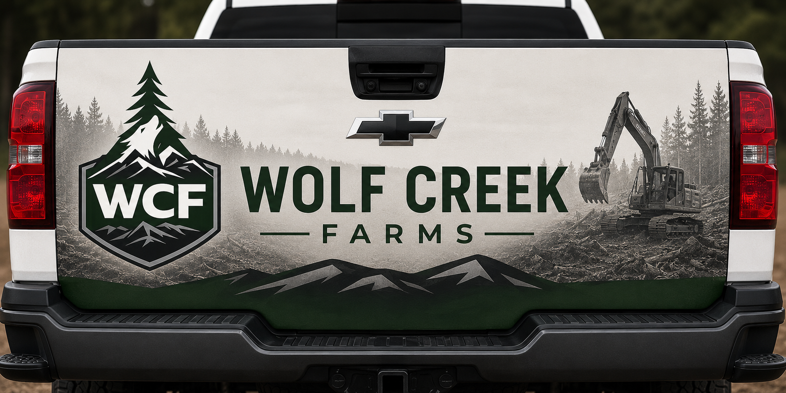
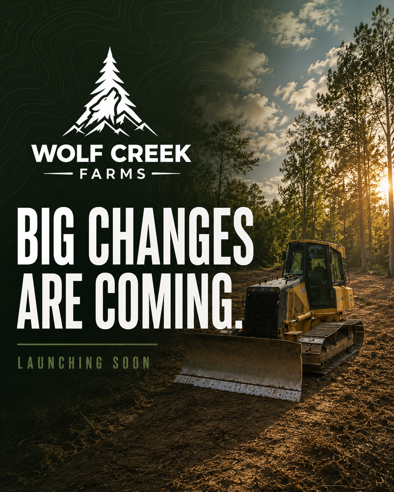
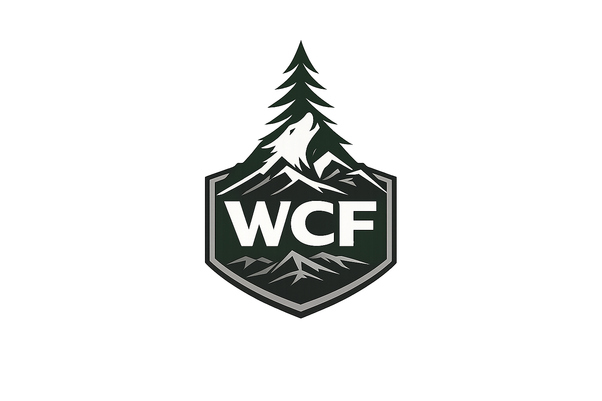
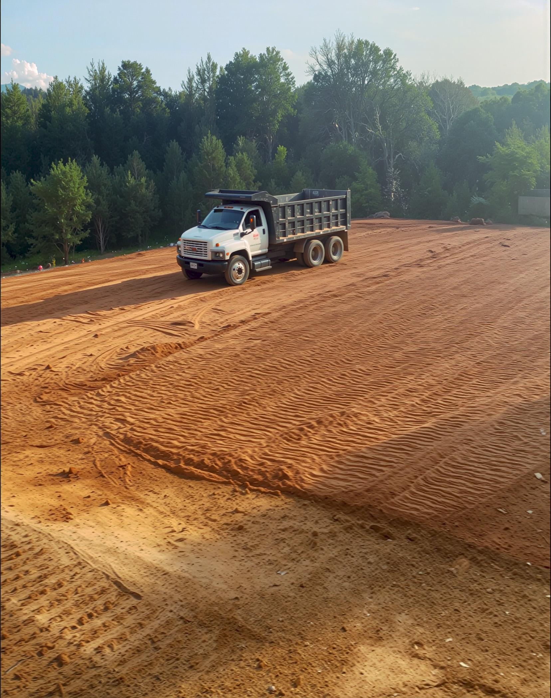

Website
A cleaner digital home for land clearing, land management, road building, drainage, and related services.
Growth Project
Rebranding a respected land management company with a stronger visual identity, cleaner website, and practical marketing foundation for future growth.
The Challenge
Wolf Creek Farms already had experience, equipment, and reputation. The opportunity was to create a sharper public image that could support trust, visibility, and future lead generation.
What We Built
Logo, visual direction, colors, and a stronger brand feel built around land, equipment, and trust.
Service-focused website structure designed to explain what Wolf Creek does and help customers make contact.
Business cards and customer-facing pieces that create a more professional first impression.
Launch and partnership graphics that make the brand easier to recognize and share online.
Brand Gallery

A cleaner digital home for land clearing, land management, road building, drainage, and related services.

Professional contact piece for estimates, referrals, and customer conversations.

Vehicle branding concept built for high local visibility.

Branded content to help introduce the new direction online.

A stronger mark built around land, timber, equipment, and trust.
A cleaner digital home for land clearing, land management, road building, drainage, and related services.
Professional contact piece for estimates, referrals, and customer conversations.
Vehicle branding concept built for high local visibility.
Branded content to help introduce the new direction online.
Website Foundation
The website gives customers a clear way to understand services, see the business as credible, and reach out for work related to land clearing, land preparation, road building, drainage, house pads, RV lots, fire breaks, hunting land development, pond building, and clay gravel.
Start Your Growth Assessment
Growth Foundation
Start Here
Take the growth assessment and I’ll review your website, Google presence, branding, reviews, and lead flow.
Start Assessment